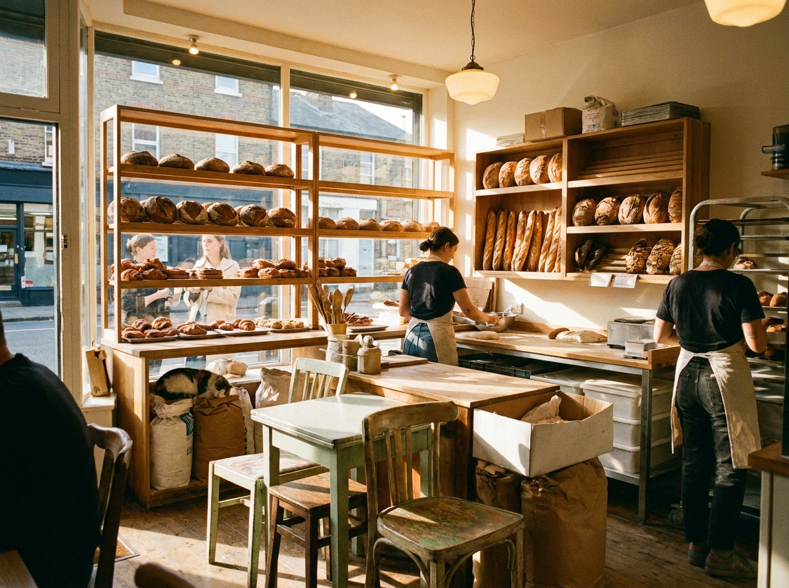
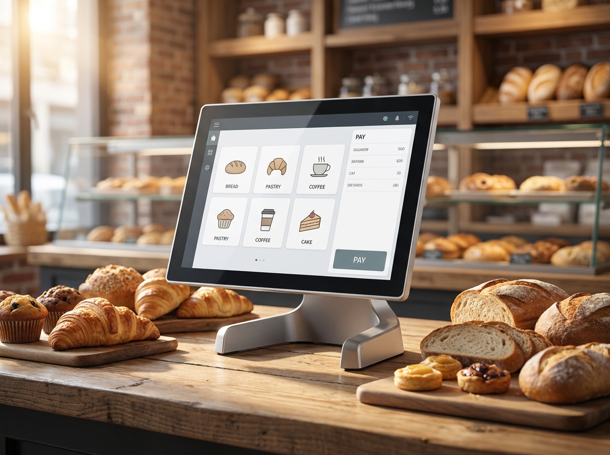

인스타·SNS로 동네 매장 알리는 법, 사진 한 장과 꾸준함이 답입니다
결론부터 말씀드리면, 작은 매장이 SNS로 손님을 늘리는 비결은 대단한 장비나 광고비가 아니라 '매일 조금씩'입니다. 저희 누리네트웍스는 14년간 수도권 3만여 매장의 결제 현장을 함께해 오면서, 손님이 꾸준히 느는 가게에는 공통점이 있다는 걸 확인했습니다. 바로 매장의 오늘을 사진과 짧은 글로 성실하게 기록한다는 점입니다. 인스타그램·네이버 밴드·카카오톡 채널 같은 SNS는 비용이 거의 들지 않으면서, 한 번 인연이 닿은 손님을 단골로 붙잡아 두는 힘이 있습니다. 이 글에서는 사진 찍기, 해시태그, 리뷰 유도, 매장 소식 전하기까지 사장님이 오늘 바로 시작할 수 있는 실전 방법을 정리했습니다.

SNS는 '광고판'이 아니라 '단골과의 대화창'입니다
많은 사장님이 SNS를 어렵게 느끼는 이유는 '멋진 광고를 만들어야 한다'고 생각하기 때문입니다. 하지만 동네 매장의 SNS는 광고판이 아니라 단골 손님과 계속 대화하는 창구에 가깝습니다. 오늘 들어온 신선한 재료, 새로 준비한 메뉴, 사장님이 아침에 매장 문을 여는 소소한 장면. 이런 일상이 손님에게는 "이 집은 살아 있고, 정성이 있다"는 신호로 전해집니다.
핵심은 꾸준함입니다. 하루에 화려한 게시물 하나를 올리고 2주 쉬는 것보다, 평범한 사진이라도 이틀에 한 번씩 꾸준히 올리는 편이 훨씬 낫습니다. 손님은 자주 보이는 가게를 기억합니다. 사진은 스마트폰 한 대면 충분합니다. 창가 자연광이 드는 낮 시간에, 배경을 정리하고, 음식이나 상품을 가까이서 찍는 것. 이 세 가지만 지켜도 사진의 품질은 눈에 띄게 달라집니다. 필터는 한두 가지만 정해서 매장 특유의 톤을 일관되게 유지하면, 게시물이 쌓일수록 '우리 가게다운' 분위기가 자연스럽게 만들어집니다.
채널별 특징 한눈에 보기
어떤 SNS부터 시작할지 고민이라면, 아래 표로 우리 매장에 맞는 채널을 골라 보시길 권합니다.
| 채널 | 잘 맞는 콘텐츠 | 강점 | 참고 |
|---|---|---|---|
| 인스타그램 | 사진·짧은 영상 | 시각 중심, 신규 손님 노출 | 해시태그·릴스 활용 |
| 카카오톡 채널 | 소식·쿠폰 알림 | 단골에게 직접 도달 | 친구 추가 유도 필요 |
| 네이버 밴드 | 동네 공지·모임 | 지역 커뮤니티 밀착 | 인천·동탄 등 지역밴드 |
| 유튜브 쇼츠 | 조리·매장 영상 | 긴 노출 수명 | 짧고 자주 |
위 표는 채널별 특징을 정리한 개념 안내이며, 각 서비스의 정확한 기능·정책은 해당 플랫폼 공식 안내를 확인하시는 것이 좋습니다. 처음부터 모든 채널을 다 하려 하지 마시고, 손님층이 가장 많이 쓰는 한두 곳에 집중해 시작하는 편이 오래 갑니다. 예를 들어 젊은 손님이 많은 카페라면 인스타그램과 유튜브 쇼츠를, 재방문이 잦은 동네 식당이라면 카카오톡 채널과 네이버 밴드를 먼저 시작해 보시길 권합니다.

해시태그·리뷰·매장 소식, 이렇게 활용하세요
해시태그는 아직 우리 가게를 모르는 손님과 연결되는 통로입니다. 무작정 인기 태그를 다는 것보다, 우리 동네와 업종을 담은 태그를 섞는 게 효과적입니다. 예를 들어 '#송도맛집' '#판교카페' '#동탄디저트'처럼 지역명을 넣으면, 근처에서 갈 곳을 찾는 손님에게 노출될 가능성이 높아집니다. 넓은 태그와 좁은 태그를 5~10개 정도 균형 있게 쓰는 것을 권합니다.
리뷰 유도는 억지로 부탁하기보다 자연스러운 계기를 만드는 게 좋습니다. 계산을 마친 손님께 "인스타에 후기 남겨 주시면 다음 방문 때 작은 서비스 드려요" 정도의 가벼운 안내면 충분합니다. 테이블에 SNS 계정을 적은 작은 안내판을 두는 것도 방법입니다. 손님이 올려 준 게시물은 반드시 감사 인사와 함께 다시 소개해 주세요. 이 작은 상호작용이 손님을 진짜 단골로 바꿉니다.
매장 소식은 SNS의 심장입니다. 휴무 안내, 신메뉴 출시, 계절 한정 상품, 이벤트처럼 손님이 알아야 할 정보를 미리 전하면, 손님은 "챙김 받는다"고 느낍니다. 특별한 뉴스가 없는 날에는 오늘 준비한 재료 사진 한 장, 매장의 정돈된 모습 한 컷이면 됩니다. 완벽한 콘텐츠보다 꾸준한 기록이 신뢰를 쌓습니다. 게시물마다 매장 위치와 영업시간, 예약·문의 방법을 한 줄이라도 덧붙이면, 처음 본 손님이 곧바로 발걸음을 옮기기 쉬워집니다.
매장의 단골 접점을 SNS와 잇는 방법
누리네트웍스는 수도권을 직접 방문해 설치·관리하는 결제 단말·포스 전문 업체입니다. 14년간 현장을 지켜 오며 수도권 곳곳의 매장과 함께해 왔고, 정품 단말과 직접 공급가를 원칙으로 사장님들의 매장을 지원해 왔습니다.
저희가 SNS 이야기를 함께 드리는 이유는, 매장 결제 접점이 곧 단골 관계의 시작점이기 때문입니다. 손님이 계산하는 그 순간이야말로 SNS 채널을 자연스럽게 안내할 수 있는 좋은 타이밍입니다. 영수증이나 결제 화면에 매장 인스타 계정을 노출하고, 포스로 파악한 재방문 손님에게 감사 메시지를 전하는 흐름을 만들면, 오프라인의 만남이 온라인 단골로 이어집니다. 안정적인 포스와 결제 환경이 받쳐 줘야 이런 SNS 운영도 흔들림 없이 지속됩니다.
가격은 매장 규모와 필요에 따라 달라지므로 거품을 뺀 직접 공급가로 상담 시 안내해 드립니다. 토스단말기·네이버단말기의 경우 월 0원·약정 없음으로 부담 없이 시작하실 수 있습니다. 결제 환경부터 손님 관리까지, 매장의 기본을 함께 챙겨 드리겠습니다.
자주 묻는 질문(FAQ)
Q. 사진 찍는 감각이 없는데 SNS를 해도 될까요?
전혀 문제없습니다. 화려한 사진보다 꾸준한 기록이 더 중요합니다. 낮의 자연광, 정돈된 배경, 가까이서 찍기 이 세 가지만 지키면 스마트폰 사진으로도 충분히 매력적인 게시물을 만들 수 있습니다.
Q. 네이버 플레이스만 하면 SNS는 안 해도 되지 않나요?
플레이스는 '검색해서 찾아오는' 손님을 위한 채널이고, 인스타·카카오채널 같은 SNS는 '이미 아는 손님과 계속 관계를 이어 가는' 채널입니다. 역할이 다르므로 함께 운영할 때 서로를 보완합니다.
Q. 하루에 몇 번, 얼마나 자주 올려야 하나요?
정답은 없지만 '적게라도 꾸준히'가 원칙입니다. 이틀에 한 번, 주 3회 정도만 지켜도 손님의 기억 속에 매장이 남습니다. 무리한 목표보다 오래 이어 갈 수 있는 리듬을 정하세요.
Q. 이벤트나 쿠폰 관련해서 지켜야 할 규정이 있나요?
경품·표시광고 등은 관련 법령의 적용을 받을 수 있어, 규정과 한도는 시기·업종에 따라 달라질 수 있습니다. 큰 규모의 이벤트를 계획하실 때는 공정거래위원회·소상공인시장진흥공단 등 공식기관의 최신 안내를 미리 확인하시길 권합니다. 소소한 서비스 제공은 대체로 부담이 적습니다.
매장에 맞는 결제·단골 관리, 편하게 상담하세요
SNS로 손님을 만드는 일은 특별한 재능이 아니라 꾸준한 습관에서 시작됩니다. 그 습관을 뒷받침하는 안정적인 포스와 결제 환경, 그리고 단골 접점을 잇는 방법까지 누리네트웍스가 함께 고민해 드리겠습니다. 수도권 어디든 직접 방문해 매장 상황을 살펴보고 맞춤으로 안내해 드리니, 부담 없이 문의 주세요.
- 📞 전화상담 1544-7754
- 🌐 홈페이지 nwpos.co.kr


이미지1-매장: 사장님이 스마트폰으로 매장의 오늘을 촬영하는 아침 장면
이미지2-제품: 계산대 위 N250 올인원 포스와 나란히 놓인 매장 SNS 안내판
이미지3-사용: 손님이 결제하며 매장 인스타 계정을 확인하는 순간